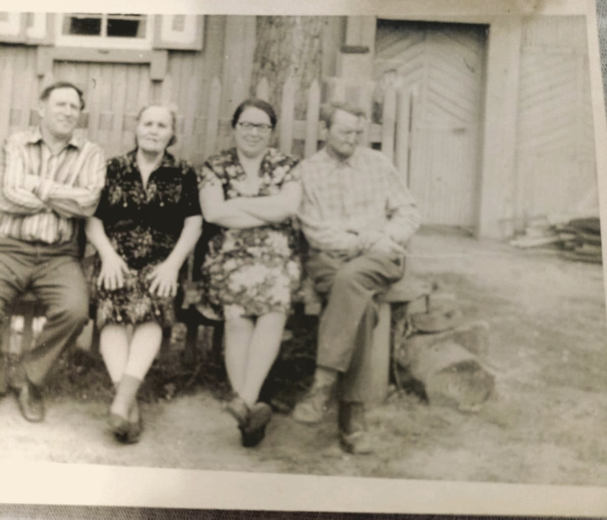
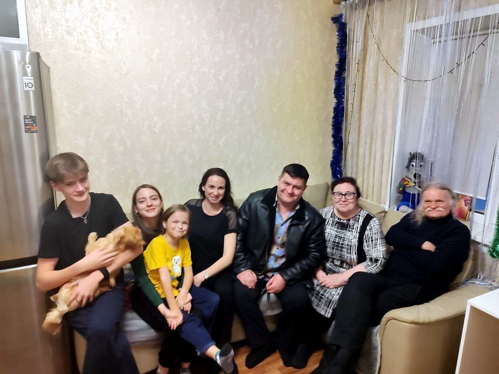
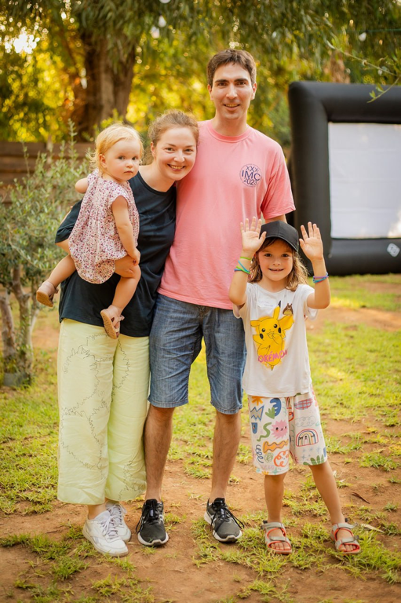

Μια μικρή ιστορία με πρόσωπα, αναμνήσεις και αγάπηНебольшая история о людях, воспоминаниях и любви
Παρουσίαση στα ελληνικάПрезентация на русском языке

Παλιά φωτογραφία του 1981, ο οικισμός Πλάνοβο στο ΝοβοσιμπίρσκСтарая фотография 1981 года, посёлок Планово в Новосибирске


Η οικογένεια είναι οι ρίζες και τα φτερά μαςСемья — это наши корни и крылья